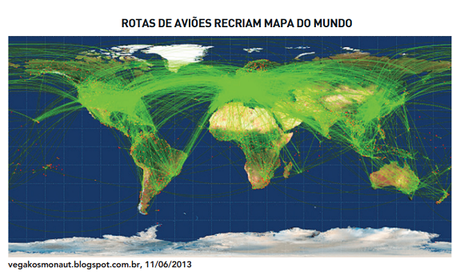
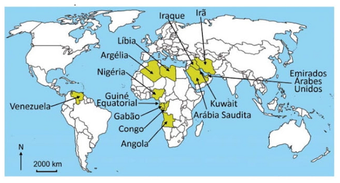
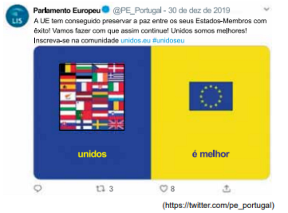

Conteúdo:
Questão 01
(ENEM 2012) A interface clima/sociedade pode ser considerada em termos de ajustamento à extensão e aos modos como as sociedades funcionam em uma relação harmônica com seu clima. O homem e suas sociedades são vulneráveis às variações climáticas. A vulnerabilidade é a medida pela qual uma sociedade é suscetível de sofrer por causas climáticas.
AYOADE, J. O. Introdução a climatologia para os trópicos. Rio de Janeiro: Bertrand Brasil, 2010 (adaptado).
Considerando o tipo de relação entre ser humano e condição climática apresentado no texto, uma sociedade torna-se mais vulnerável quando
a) concentra suas atividades no setor primário.
b) apresenta estoques elevados de alimentos.
c) possui um sistema de transportes articulado.
d) diversifica a matriz de geração de energia.
e) introduz tecnologias à produção agrícola.
Comentário:
O setor primário é dependente das condições climáticas, sendo assim, podemos relacionar a vulnerabilidade social à falta de alimentos gerados por problemas de seca ou chuvas intensas, pois diminuiria drasticamente a oferta de alimentos, acarretando numa crise alimentícia que iria atingir diretamente tanto a população rural como também a urbana.
Questão 02
(UNICAMP 2021)
“As cidades em que vivemos hoje são fechadas de maneiras que refletem o que aconteceu no mundo da tecnologia. Na imensa explosão urbana que ocorre atualmente no Sul Global - na China, na Índia, no Brasil, no México, nos países da África Central -, grandes empresas das finanças e da construção estão padronizando a cidade; no momento em que o avião aterrissa, talvez não possamos distinguir Pequim de Nova York. Seja no Norte ou no Sul, o crescimento das cidades não gerou grandes experimentações na forma. O complexo comercial, o campus universitário, a torre residencial erguida num recanto de um parque não são formas favoráveis à experimentação por serem autossuficientes, e não abertas a influências e interações externas”.
(Adaptado de Richard Sennett, Construir e habitar. Ética para uma cidade aberta. Rio de Janeiro: Editora Record, 2018, p. 22.)
De acordo com a visão do autor, podemos afirmar que:
a) O processo de urbanização é bastante diferenciado no mundo todo, promovendo novas experiências que abrem os espaços à criatividade.
b) As formas urbanas autossuficientes não homogeneízam as cidades, pelo contrário, as tornam lugar de novas complexidades e interações.
c) A cidade fechada deriva de sua instrumentalização para a eficácia, empobrecendo experiências e tornando o espaço habitado mais artificial.
d) A paisagem urbana é, cada vez mais, a expressão de potencialidades locais, demonstrando a despadronização das formas construídas.
Nesta questão, é citado um trecho do sociólogo Richard Sennett, que discute como as cidades no mundo atual são mais “fechadas”, refletindo o que ocorreu no mundo da tecnologia.
A ideia de “fechadas” significa que construções modernas com muita tecnologia não são abertas ao entorno local, com poucas trocas, e por isso também são autossuficientes e fechadas, e tendem a uma padronização da paisagem das cidades. Hoje em dia formas espaciais, como aeroportos, prédios de negócios, shoppings centers são semelhantes em qualquer lugar do mundo e demonstram essa padronização.
Neste sentido, a alternativa A está errada, pois afirma que o processo de urbanização é diferenciado no mundo, enquanto na verdade ele está tornando-se menos diferenciado.
A alternativa B está errada, pois essas formas urbanas autossuficientes homogeneízam a paisagem das cidades, tornando-as semelhantes. E a alternativa D está errada ao afirmar que a paisagem urbana é a expressão de potencialidades locais, quando o que ocorre é o inverso, elas se tornam mais homogêneas e padronizadas.
A resposta correta é então a alternativa C, que afirma que a cidade se torna mais fechada e que essa característica deriva da sua instrumentalização para a eficácia, o que acaba por tornar o espaço habitado mais artificial e mais pobre, menos diversificado.
Questão 03
(UERJ 2015)

Um consultor canadense, Michael Markieta, desenvolveu um sistema de visualização das rotas de tráfego aéreo ao redor do globo que recria o mapa-múndi, como mostra a imagem. Atualmente, há 58 mil rotas aéreas cruzando os céus nos cinco continentes. Na imagem revelada por Markieta, não causa surpresa o fato de que os pontos mais densos aparecem em áreas onde muitas rotas seguem o mesmo trajeto e têm como destino as maiores cidades do mundo.
Adaptado de vegakosmonaut.blogspot.com.br, 11/06/2013.
Nessa representação das rotas do transporte aéreo comercial, o mapa ilustra a seguinte mudança na geopolítica internacional contemporânea:
a) aculturação de áreas periféricas
b) metropolização de regiões rurais
c) globalização de países desenvolvidos
d) conurbação de aglomerações populacionais
O avião tornou-se um dos símbolos maiores do desenvolvimento tecnológico dos transportes na contemporaneidade. A partir da década de 1930, em ritmo maior no pós-1945, o transporte de determinadas cargas e de passageiros por meio da aviação comercial redimensionou conexões entre as sociedades.
As grandes companhias áreas sediaram-se nos países desenvolvidos, passando a interferir no ritmo da aplicação de avanços tecnológicos, no lançamento de novos modelos de aeronaves, nos padrões de atendimento aos usuários e nos deslocamentos de passageiros internacionais.
A representação cartográfica das rotas da aviação comercial na atualidade permite visualizar tanto a concentração espacial dessas rotas, fortemente presentes no hemisfério norte, destacando-se as rotas entre América do Norte, Europa e Sudeste Asiático, quanto áreas mais periféricas a esse circuito.
A análise dessa representação aponta para alguns dos fluxos que constituem as práticas das economias e sociedades mais globalizadas.
Questão 04
(FUVEST 2021) Observe o mapa com dados de 2020:

Os países destacados em amarelo no mapa referem-se:
a) Ao bloco dos BRICS.
b) Aos novos integrantes da OCDE.
c) A países excluídos da OMC.
d) A países da OPEP.
e) A países membros da OTAN.
A OPEP (Organização dos Países Produtores de Petróleo) surgiu em 1960 em oposição às empresas multinacionais que constituíam um oligopólio na área de produção, refino e distribuição de petróleo (as chamadas “Sete Irmãs do Petróleo”). Ao longo dos anos, a OPEP cresceu em importância no controle da produção de petróleo, constituindo-se em um cartel, tendo variado quanto aos países-membros, com a entrada de uns e a saída de outros, contando atualmente com Venezuela (América do Sul), Líbia, Argélia, Nigéria, Guiné Equatorial, Gabão, Congo, Angola (África) Irã, Iraque, Kuwait, Arábia Saudita e Emirados Árabes Unidos (Ásia), ou seja, treze membros.
Questão 05
(ETEC 2019) O Tratado da União Europeia estabelece que qualquer país europeu pode se candidatar à adesão ao bloco. Porém, um país só pode entrar na União Europeia se cumprir alguns critérios de adesão.
Um país que se candidate a membro desse bloco econômico deve necessariamente
a) ser republicano e possuir economia de mercado, porém submetida a controles constantes por parte do Fundo Monetário Internacional (FMI).
b) permanecer fiel à legislação do bloco e delegar suas questões de segurança nacional à Organização do Tratado do Atlântico Norte (OTAN).
c) possuir regime monarquista de governo, aceitar a política econômica do bloco e se comprometer a utilizar o Euro.
d) estar situado na Europa Ocidental e substituir sua Câmara de Deputados e seu Senado pelo Parlamento Europeu.
e) ter instituições estáveis que garantam a democracia, o Estado de direito e o respeito aos direitos humanos.
Questão 06
(UEA 2020)
Leia o tuíte publicado pelo Parlamento Europeu em 30.12.2019.

A mensagem de unidade foi quebrada pela efetivação da saída, em 31.01.2020, de um dos países-membros que integrava a União Europeia.
O país que deixou o bloco e a consequência dessa ação para a União Europeia são:
a) Reino Unido; a renegociação de tratados comerciais entre o bloco e o país.
b) Suécia; a perda da contribuição monetária do país para o fundo econômico do bloco.
c) Grécia; a desvalorização cambial do Euro em relação à moeda nacional, o Dacma.
d) Espanha; a insegurança de que o movimento inspire outros países-membros.
e) Itália; a redefinição do controle de fronteiras no espaço Schengen.
Questão 07
(PUC-RIO 2021) A urbanização é um processo espacial de transformação de uma sociedade, em múltiplas escalas, da condição rural para a urbana.
Tal transformação é medida entre duas dinâmicas, que são:
a) o crescimento da população das cidades e o aumento dessa população em relação aos habitantes do campo.
b) o aumento do nível de renda e das tecnologias das populações das cidades em relação às do campo.
c) incremento das taxas de natalidade nas cidades e a redução exponencial dos nascimentos nos espaços rurais.
d) o progresso do meio técnico-científico e informacional nas cidades e a perda da produção de renda pela agricultura.
Questão 08
(ENEM 2020) A demanda mundial para a produção de alimentos aumenta progressivamente a taxas muito altas. Atualmente, na maioria dos países, continentes e regiões, a água consumida na agricultura é de cerca de 70% da disponibilidade total.
TUNDISI, J G Recursos hídricos no futuro: problemas e soluções Estudos Avançados. n 63, 2008 (adaptado)
Para que haja a redução da pressão sobre o recurso natural mencionado, a expansão da agricultura demanda melhorias no(a)
a) fertilização química do solo.
b) escoamento hídrico do terreno.
c) manutenção de poços artesianos.
d) eficiência das técnicas de irrigação.
e) velocidade das máquinas colheitadeiras.
Para que haja a redução da pressão sobre a água, a expansão da agricultura demanda melhorias na eficiência das técnicas de irrigação. O uso eficiente pode ser alcançado atuando-se na estrutura de irrigação então existente, em sistemas de irrigação e gestão do uso de água, nos métodos de manejo da irrigação e nas técnicas que permitem aumento da eficiência do uso da água.
Questão 09
(UPE 2019) O espaço global é formado por redes desiguais, emaranhadas em escalas e níveis diferentes, que se sobrepõem e se prolongam umas sobre as outras. Esse processo de recriação dos espaços geográficos apresenta algumas características. Sobre elas, analise os itens a seguir:
1. exacerbação das especializações produtivas no nível do espaço.
2. concentração da produção em unidades menores, com o aumento da relação entre produto e superfície.
3. aceleração de todas as formas de circulação e seu papel crescente na regulação das atividades localizadas.
4. instituição de um novo papel da organização dos processos de regulação na constituição das regiões.
5. transformação dos territórios nacionais em espaços nacionais da economia internacional.
Estão CORRETOS
a) 1 e 2, apenas.
b) 1, 2 e 3, apenas.
c) 3, 4 e 5, apenas.
d) 2, 4 e 5, apenas.
e) 1, 2, 3, 4 e 5.
Questão 10
(FAMENA 2020) Nas últimas décadas, as instituições financeiras se tornaram extremamente importantes para a economia global.
Uma delas é a Organização Mundial do Comércio (OMC), que atua
a) no gerenciamento do euro e das políticas econômicas da União Europeia.
b) na concessão de financiamentos para promover o desenvolvimento socioeconômico.
c) na regulação do comércio para o cumprimento dos acordos multilaterais.
d) na regulamentação das relações de trabalho no mundo.
e) na disponibilização de recursos financeiros para equilibrar as balanças comerciais.